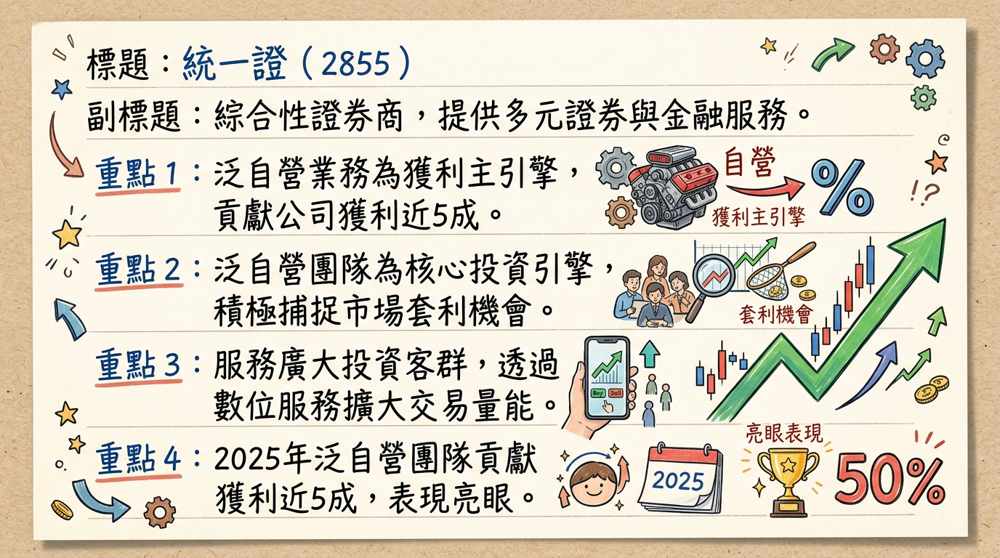
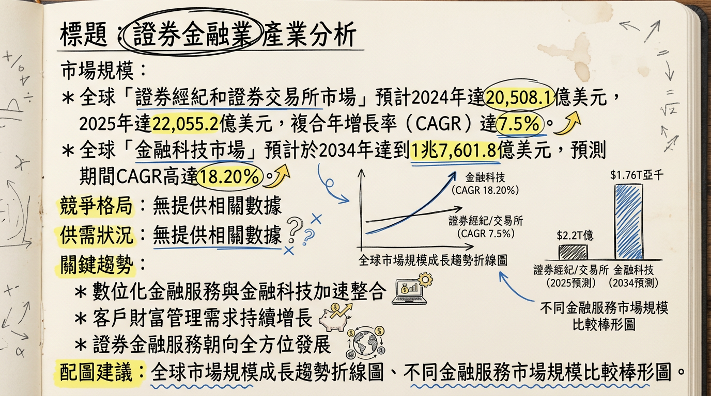
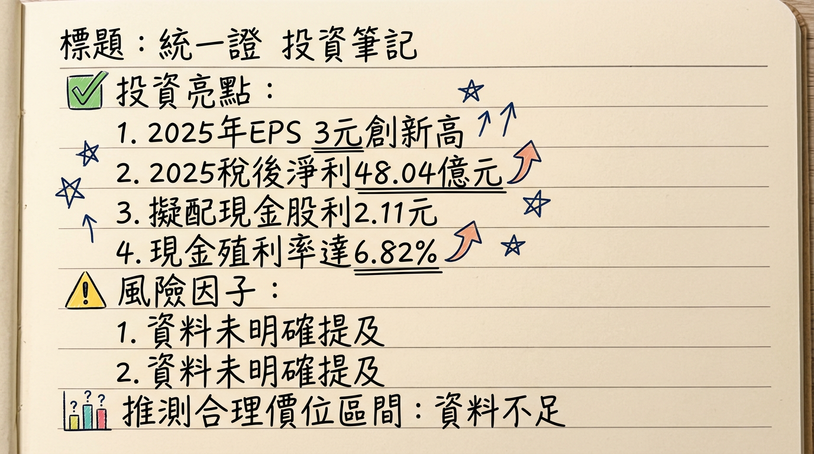

2855 統一證 深度研究報告
一句話摘要
統一證券 (2855) 在2025年受惠於台股多頭與AI產業浪潮，創下合併淨收益與EPS歷史新高，並擬配發近7成的現金股利。展望2026年，公司將持續透過泛自營團隊的靈活操作、數位金融服務的創新以及對AI主題的精準佈局，預期在台股整體企業獲利成長15%~20%的背景下，營運將維持審慎樂觀並具備成長動能。
公司概覽
業務與產品線
統一證券主要提供多元化的證券金融服務，其核心業務與產品線涵蓋：
- 經紀業務：受託買賣有價證券，市佔率有所提升。
- 自營業務：自行買賣有價證券，包括股票自營、債券自營、計量交易及金融商品等。泛自營團隊在2025年貢獻了公司獲利近5成，是核心投資引擎。
- 承銷業務：承銷有價證券，因IPO主辦案件與承銷金額提升，手續費成長高於預期。
- 財富管理業務：提供境外結構型商品銷售、海外股票收入等金融商品服務。2025年境外結構型商品銷售年增80%，海外股票收入年增199%。
- 數位服務：透過App「統一e起發」和「統e好康+」等回饋機制，優化客戶體驗，擴大客群與交易量能。
- 期貨業務：輔助期貨自營及相關業務。
- 股務代理業務。
公司旗下亦包含統一投顧、統一投信、統一期貨等子公司，提供更全面的金融服務。
營收結構 (2025年獲利貢獻)
由於證券業的營收結構較為複雜且可能隨市場波動，以下為2025年各主要業務對獲利貢獻的概覽：
| 業務類別 | 獲利貢獻說明 |
|---|
| 泛自營團隊 | 佔公司獲利近5成，為公司核心獲利引擎。 |
| 財富管理業務 | 境外結構型商品銷售年增80%。 |
| 海外股票收入年增199%。 |
| 承銷業務 | 因IPO主辦案件與承銷金額提升，手續費成長高於預期。 |
| 經紀業務 | 市佔率提升，融資餘額較2024年成長超過一倍。 |
核心競爭優勢
強勁的泛自營操作能力：泛自營團隊在2025年貢獻公司近5成獲利，顯示其對市場趨勢的敏銳捕捉與交易避險能力，是穩定且高效率的獲利來源。
全面性的金融服務平台：透過旗下投顧、投信、期貨子公司，統一證券能提供客戶涵蓋證券、期貨、投信、財富管理的一站式金融服務，提升客戶黏著度。
積極推動數位轉型：持續優化「統一e起發」App並整合OPENPOINT點數機制，透過數位策略擴大客群、提升交易量能與客戶體驗。
精準的產業趨勢洞察與佈局：公司對AI產業趨勢有深入研究，並將其融入自營與財富管理等業務策略中，有效把握市場熱點。
穩健的財務表現與股利政策：2025年創歷史新高的營運表現與穩定的現金股利配發，展現公司優異的經營成果與回饋股東的誠意。
財務分析
月營收趨勢
| 月份 | 金額 (億元) | 月增率 MoM | 年增率 YoY |
|---|
| 2026年1月 | 32.59 | 97.42% | 373.49% |
| 2025年12月 | 16.51 | 106.99% | 57.29% |
| 2025年11月 | 7.98 | -67.80% | 4.83% |
| 2025年10月 | 24.77 | 80.29% | 157.94% |
| 2025年9月 | 13.74 | -23.27% | 98.73% |
| 2025年8月 | 17.91 | 26.78% | 97.62% |
季度營運數據 (2025年第四季)
| 項目 | 金額/比率 | 說明 |
|---|
| 合併淨收益 | 49.25億元 | 季增7.62%，年增77.75% |
| 毛利率 | 82.96% | |
| 營業利益 | 16.94億元 | 季減10.1%，年增224.17% |
| 營業利益率 | 34.39% | |
| EPS | 1.33元 | 季減0.42%，年增約180% |
年度營運趨勢
- 2025年合併淨收益：135.41億元 (年增3.92%)
- 2025年稅後淨利：48.04億元 (創歷史新高)
- 2025年EPS：3元 (創上市櫃以來新高)
- 2024年EPS：3元
法說會重點
日期：2026年3月3日 (2025年財報法說會)
主要指引與管理層發言：
- 2025年成果：受惠於AI產業浪潮與台股強勁表現，公司2025年營運創下歷史新高。
- 2026年展望：管理層對營運前景抱持審慎樂觀態度。
- 策略重心：將持續拓展數位服務、優化客戶體驗。
- 自營業務：在把握市場利多環境下，自營業務將保持彈性操作。
- 股利政策：董事會決議擬配發每股現金股利2.11元，配發率約70.33%，以2026年3月2日收盤價計算，現金殖利率達6.82%。
- 未來聚焦：積極佈局AI、電力、半導體及記憶體等強勢產業，並於2026年持續關注AI伺服器、先進製程（2nm）、先進封裝（CoWoS）、特殊應用晶片（ASIC）、PCB/CCL、電源、散熱（液冷）、機構件等相關投資機會。
註：由於證券業特性，管理層未提供具體的出貨量/訂單能見度、產能利用率及詳細資本支出金額等製造業常見指標。
券商觀點
目前尚未找到針對統一證 (2855) 2025-2026年最新的券商目標價、EPS預估數字及評等報告。
財報深度分析
利潤率趨勢
統一證券2025年第四季表現亮眼，營運效率顯著提升。
| 項目 | 2025年第四季數值 | 2備註 |
|---|
| 毛利率 | 82.96% | 高毛利率顯示手續費與金融商品業務具備良好獲利結構。 |
| 營業利益率 | 34.39% | 第四季營業利益年增率達224.17%，顯示營運槓桿效益顯現。 |
| 稅後淨利率 | 43.52% | 第四季稅後淨利年增率達179.19%，受惠於自營操作及市場活絡。 |
：
2025年營運創歷史新高，主要歸因於：
市場環境有利：關稅議題降溫及AI題材延續，帶動台股市場活絡。
自營部門擴大操作：在股市回升與AI供應鏈行情帶動下，自營交易、套利及避險部位均增加，顯著推升獲利。
財富管理業務成長：境外結構型商品收入年增80%，海外股票收入年增199%，顯示高毛利業務表現強勁。
承銷業務提升：IPO主辦案件與承銷金額增加，帶動手續費收入成長高於預期。
資本支出與折舊攤銷
- 2025年第四季資本支出：-2,207,860千元 (負值可能表示收回或資產處置，需進一步查證詳細報表說明)。
- 2025年第四季折舊：73,453千元。
- 2025年第四季攤銷：26,359千元。
- 趨勢：作為金融服務業，統一證券的資本支出主要集中在IT基礎設施、數位平台開發等無形資產。目前未有連續季或年度的詳細資本支出趨勢與預計新增產能資訊。
存貨與營運效率分析
- 存貨：證券業不涉及實體存貨，此項目不適用。搜尋結果顯示存貨週轉為「無」。
- 應收帳款週轉天數：
* 22025年第四季：
658.85天
* 2025年第三季：約243.33天 (365/0.15)
* 2025年第二季：約608.33天 (365/0.06)
* 2025年第一季：約730天 (365/0.05)
* 2024年第四季：約405.56天 (365/0.09)
應收帳款週轉天數波動較大且較長，在證券票券業中排名較後，可能與其業務性質如證券交割款項、特定金融商品結算週期等有關，需配合詳細會計政策進行解讀。
負債與現金流量
- 負債比率：2025年第四季為84.20%，較前一季上升。2025年資產總額達2497.76億元 (年增29%)，負債2103.02億元 (年增33%)。資產與負債同步擴張，主要反映自營部位擴大操作使資金需求上升。
- 自由現金流量：2025年第四季自由現金流為-22,078,602千元。目前未有連續四季或年度的自由現金流量趨勢，單一季度數據不足以判斷長期趨勢。
- 淨負債/EBITDA：目前未找到2024-2026年相關具體數據。
業外收支
目前搜尋結果未明確指出2024-2026年統一證的業外收支重大項目，但作為證券公司，其業外收入可能包含利息收入、股利收入等。
股權異動
董監事/大股東申報轉讓
| 日期 | 申報人 | 身份 | 轉讓股數 (股) | 方式 |
|---|
| 2025/04/07 | 余復村 | 經理人 | 89,646 | 一般交易 |
| 2024/05/24 | 大樂投資事業股份有限公司 | 董事 | 1,200,000 | 一般交易 |
| 2024/05/07 | 大樂投資事業股份有限公司 | 董事 | 1,200,000 | 一般交易 |
：
- 統一企業股份有限公司：28.678%
- 統一綜合證券股份有限公司受託信託財產專戶：3.075%
- 凱南投資股份有限公司：2.902%
庫藏股與可轉債
- 庫藏股買回紀錄：目前未找到2024-2026年統一證買回庫藏股的具體紀錄。
- 可轉換公司債 (CB)：目前未找到2024-2026年統一證發行可轉換公司債的相關資訊。
增減資與股利政策
- 增減資計畫：目前未找到2024-2026年統一證有現金增資或減資計畫的相關資訊。
- 股利政策：
*
2026年：預計發放現金股利
2.11元 (配發率約70.33%)。
* 2025年：預計於2025/07/08除權息，發放現金股利1.1元，股票股利1元。
* 2024年：於2024/07/23除權息，發放現金股利1.32元。
產業分析
市場規模與供需
*
證券經紀和證券交易所市場：2024年約
20,508.1億美元，預計2025年增至
22,055.2億美元 (CAGR 7.5%)。另一報告預計2026年為
14,620億美元，2035年達
19,540億美元 (2026-2035 CAGR 3.2%)。
* 金融科技市場：2025年預估3,948.8億美元，2026年達4,607.6億美元，預計2034年達1兆7,601.8億美元 (CAGR 18.20%)。
* 2025年全球金融市場受惠於企業盈餘增長、GDP動能好轉及央行寬鬆貨幣政策而表現強勁。
* 台灣資本市場在2024年因AI產業帶動，上市公司營收獲利成長，推升台股指數突破2萬點，全年漲幅達28.47%，日均成交值創歷史新高。
* 展望2026年，AI驅動的科技變革將引發投資熱潮，券商板塊景氣度有望延續，市場活躍度擴張。
產業平均獲利率
- 台灣證券業：2024年獲利率上升至12.3%，較前一年增加4個百分點，主要受惠於經紀和自營交易收入強勁。
- 中國上市券商：2025年前三季度調整後歸母淨利潤率大幅提升至40.59%。
註：未找到2025-2026年台灣主要同業的具體毛利率和EPS對比數據。*
競爭格局
台灣證券商市場占有率 (2024年全年成交額計)：
| 排名 | 券商 | 市佔率 |
|---|
| 1 | 元大證券 | 12.89% |
| 2 | 凱基證券 | 10.08% |
| 3 | 富邦金控 | 7.05% |
| 4 | 永豐金證券 | 4.62% |
| 5 | 國泰證券 | 4.06% |
| 6 | 群益證券 | 3.38% |
| 7 | 元富證券 | 3.18% |
| 8 | 華南永昌 | 2.54% |
| 9 | 兆豐證券 | 2.52% |
| 10 | 統一證券 | 2.43% |
：
| 比較項目 | 統一證券 (2855) | 主要競爭者 (元大、凱基等大型券商) |
|---|
| 市佔率 | 2.43% (2024年)，排名第10。 | 元大證券12.89%，凱基證券10.08%，具領先優勢。 |
| 技術與數位服務 | 持續投入數位轉型，「統一e起發」App，整合OPENPOINT點數。 | 大型金控資源豐富，數位平台與FinTech投入高。 |
| 獲利能力 | 2025年EPS 3元創歷史新高，泛自營團隊貢獻獲利近5成。 | 大型券商因規模經濟與多元業務，獲利規模大。 |
| 客戶基礎 | 透過數位平台優化與行銷活動擴大客群。 | 依託金控集團客戶基礎，交叉銷售能力強。 |
| 產品廣度 | 提供經紀、自營、承銷、財富管理、期貨、投顧、投信等全面服務。 | 提供相似的全面金融服務，部分可能更專精或具獨特產品。 |
產業趨勢
人工智慧 (AI) 的應用與普及：
* 具體影響：2026年將是AI應用從「技術驗證」邁向「商業推廣」的關鍵年。AI將加速證券業從「數位化」進入「智慧化」與「隱形化」的「代理式金融」時代，提升運營效率，並為科技業及其他產業創造新獲利機會。
* 對證券業：AI可運用於智能客服、投資顧問、風險管理與交易策略優化，但也可能顛覆傳統金融服務模式。
金融科技 (FinTech) 的深化：
* 具體影響：金融科技市場預計快速成長，特別是AI驅動型詐欺偵測、無密碼身份驗證、開放銀行生態系統擴展及零信任安全框架導入。監管科技 (RegTech) 因應高科技詐騙與洗錢技術發展而日益重要。
數位轉型與強化資安：
* 具體影響：證券交易所與券商持續推動數位轉型，導入大語言模型、智能客服，並要求券商導入金融零信任架構，以強化資安防禦網和專業人才培訓。
對統一證的機會與威脅
機會：
- AI驅動的投資主題：積極佈局AI供應鏈相關投資機會，包括先進製程（2nm）、先進封裝（CoWoS）、ASIC、PCB/CCL、電源、散熱等，把握市場熱點。
- 數位化服務優勢：透過「統一e起發」App和OPENPOINT點數整合，吸引新世代客戶，提升交易量和市佔率。
- 泛自營團隊獲利能力：在市場波動中，其泛自營團隊的靈活操作能持續創造穩健獲利。
- 財富管理與資產管理業務增長：受益於居民財富配置調整和長線資金入市趨勢。
威脅：
- AI顛覆傳統業務：AI的普及可能壓縮傳統財富管理和顧問服務的利潤空間。
- 產業競爭加劇：台灣證券業「大者恆大」格局，大型金控旗下券商資源優勢，小型券商需更專注利基市場。
- 技術投資壓力：持續投入AI、FinTech和資安領域對公司的資本支出和研發能力構成考驗。
- 地緣政治與經濟不確定性：全球經濟成長放緩、貿易摩擦及地緣政治風險仍可能影響台股表現，進而衝擊券商獲利。
相關投資題材的具體連結
- AI (人工智慧)：統一證券將AI視為2026年台股核心動能，重點關注AI伺服器、先進製程、先進封裝、ASIC、PCB/CCL、電源、散熱等供應鏈相關產業，以及利基型零組件與客製化服務供應商。
- 數位貨幣與區塊鏈：關注數位貨幣主權下的穩定幣生態系統參與者和金融創新基礎建設業者，以及資產代幣化 (RWA) 的發展。
- ESG與綠色轉型：證交所推動「綠色證券認證制度」和ESG評鑑，ESG主題將驅動新一輪資金輪動與成長機會。
近期催化劑
利多事件
- 2026年3月6日：公告2026年2月稅後盈餘11.70億元 (EPS 0.731元)，累計1-2月稅後盈餘達30.47億元 (EPS 1.903元)。
- 2026年3月3日：董事會通過2025年財報，合併淨收益135.41億元、稅後淨利48.04億元、EPS 3元，均創歷史新高。擬配發每股現金股利2.11元，現金殖利率達6.82%。
- 2026年2月12日：公布2026年1月營收達32.59億元，月增97.42%，年增373.49%，創歷史新高。
利空事件
目前未見具體明確的利空事件報導。
三大法人買賣超 (2026年3月上半月觀察)
- 2026年3月6日：外資賣超1,387張，投信賣超4張，自營商買賣超0張，三大法人合計賣超1,391張。
- 2026年3月5日：外資買超2,349張，投信賣超88張，自營商買賣超0張，三大法人合計買超2,261張。
- 2026年3月4日：外資賣超4,077張，投信賣超12張，自營商買賣超0張，三大法人合計賣超4,089張。
- 2026年3月3日：外資買超2,046張，投信買超3張，自營商買賣超0張，三大法人合計買超2,049張。
- 2026年3月2日：外資賣超8,903張，投信買超29張，自營商買賣超0張，三大法人合計賣超8,874張。
- 趨勢：進入3月以來，外資對統一證呈現買賣超互見的波動，投信則多為小幅賣超。整體三大法人動向顯示市場對其股價有較大的短期分歧。
⭐ 成長動能時間軸
| 時間點/階段 | 成長動能 | 具體內容與量化目標 |
|---|
| 2025年 | 強勁市場行情 | 台股在AI浪潮與全球經濟好轉下表現強勁，加權股價指數全年漲幅達28.47%。統一證券藉此實現合併淨收益135.41億元、EPS 3元的歷史新高。 |
| 2025年H2 | AI主題佈局深化 | 統一證券積極佈局AI、電力、半導體及記憶體等強勢產業。 |
| 持續進行 | 數位服務優化 | 透過App「統一e起發」和「統e好康+」App優化客戶體驗，並整合OPENPOINT點數機制，提升客戶金融生活體驗。這有助於擴大客群與交易量能，尤其吸引年輕客戶。 |
| 持續進行 | 新客戶/新市場擴展 | 加入OPENPOINT點數生活圈並搭配多項行銷活動，帶動經紀業務市佔率提升。 |
| 2026年 | AI黃金時代 (需求面) | 統一投顧預估2026年台股指數高點上看34,988點，可能於第四季達成，並預期台股企業獲利將穩健成長15%~20%，挑戰5兆元大關。主要驅動力為AI應用大爆發，受惠產業包括台積電延伸的先進製程（2nm）及先進封裝（CoWoS）、ASIC、PCB/CCL、電源、散熱（液冷）、機構件等獲利強勁次族群。中小型股則聚焦於利基型零組件與客製化服務供應商。同時，外資淨匯入規模上看200億美元，助推資金行情。傳產看好消費概念、政策相關及電子紅利受惠股。 |
| 持續進行 | 泛自營團隊動能 | 維持彈性且積極的自營操作策略，把握市場趨勢與套利機會，持續作為公司核心獲利引擎。 |
2026 展望
成長動能
AI黃金時代下的台股熱潮：統一證券高度看好AI產業將是驅動2026年台股的主要力量，預期指數高點上看34,988點，整體企業獲利成長15%~20%。這將直接推升證券市場交易量與券商的經紀、自營收益。
泛自營團隊的靈活操作：在市場波動中，公司泛自營團隊的專業能力與彈性操作，將能持續捕捉投資機會，為公司帶來穩定的獲利貢獻。
數位轉型與客戶拓展：透過「統一e起發」App及OPENPOINT點數機制的整合，持續優化客戶體驗並擴大數位客群，有助於提升市佔率與交易量。
穩健的經濟與資金面：預期外資淨匯入規模上看200億美元，加上聯準會降息循環的預期，將為台股注入充沛資金動能。
風險因子
市場成交量波動性：券商獲利與市場成交量高度相關。若2026年全球經濟或地緣政治因素導致台股成交量大幅萎縮，將直接衝擊統一證券的經紀手續費及自營收益。
全球經濟與地緣政治不確定性：全球經濟成長前景疲弱、貿易爭端、地緣政治衝突（如烏俄戰爭、中東衝突）可能引發系統性風險，影響投資人信心。
利率路徑與金融政策變動：聯準會降息時程與幅度若不如預期，可能影響市場資金流動性及金融商品評價。
AI技術發展的潛在衝擊：雖然AI帶來機會，但也可能對傳統金融業務模式造成顛覆，若公司未能及時調整，可能面臨競爭壓力。
中國經濟下行風險：中國經濟走弱可能對全球供應鏈及區域市場帶來不確定性，間接影響統一證券的海外投資佈局或業務發展。
投資結論
統一證券 (2855) 在2025年表現卓越，創下歷史新高，並展現出其在動盪市場中把握機會的能力。展望2026年，在AI主題驅動下，台股預期將維持熱絡，統一證券憑藉其：
強大的泛自營操作能力：作為核心獲利引擎，能有效應對市場變化，創造穩健收益。
積極的數位金融策略：持續優化數位平台，有效擴大客戶基礎並提升交易效率。
精準的產業趨勢佈局：深度聚焦AI供應鏈，使其投資策略與市場主流高度吻合。
穩健的股利政策：配發率維持在70%以上，提供股東具有吸引力的現金回報。
綜合考量其2025年EPS 3元，2026年市場的樂觀展望以及AI帶來的潛在成長動能，給予統一證券「買進」的投資建議。
預期2026年EPS有機會達到3.45元至3.6元（參考2026年台股企業獲利成長15%~20%），考量其穩健的財務結構與股利政策，並給予證券業合理的本益比區間12-14倍。
目標價區間建議：
以2026年預估EPS 3.45元 ~ 3.6元，乘以12倍 ~ 14倍本益比，目標價區間建議為 41.4元 ~ 50.4元。
本報告由 AI 自動產生，資料來源為公開網路資訊，僅供參考，不構成投資建議。產生時間：2026-03-09 21:12
📊 資訊卡


